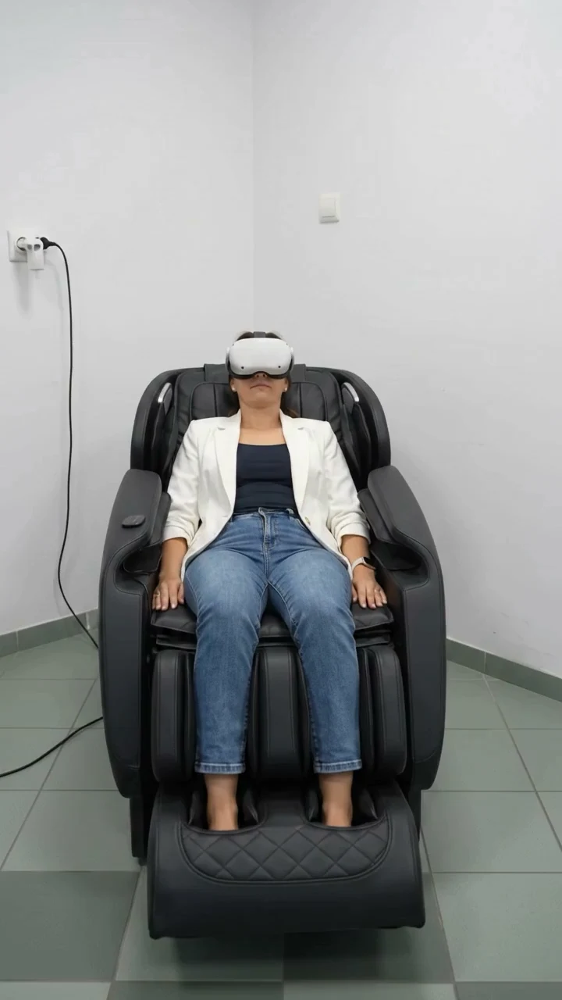

In-house system
Triangle: closed-loop clinical neuro-immersion
An integrated station that connects three elements in one feedback loop: immersive VR environments, continuous HRV biofeedback and a Zero Gravity chair. The system reacts to the user’s autonomic state. As the user relaxes, the VR scene and the chair adapt to sustain parasympathetic activation.
- Automated session flow, with manual override of every parameter by the session lead
- Per-person tuning of immersion, chair and biofeedback settings instead of fixed templates
- Available for deployment in external clinics and research units (B2B)
VRHRV closed loopZero Gravity chair
